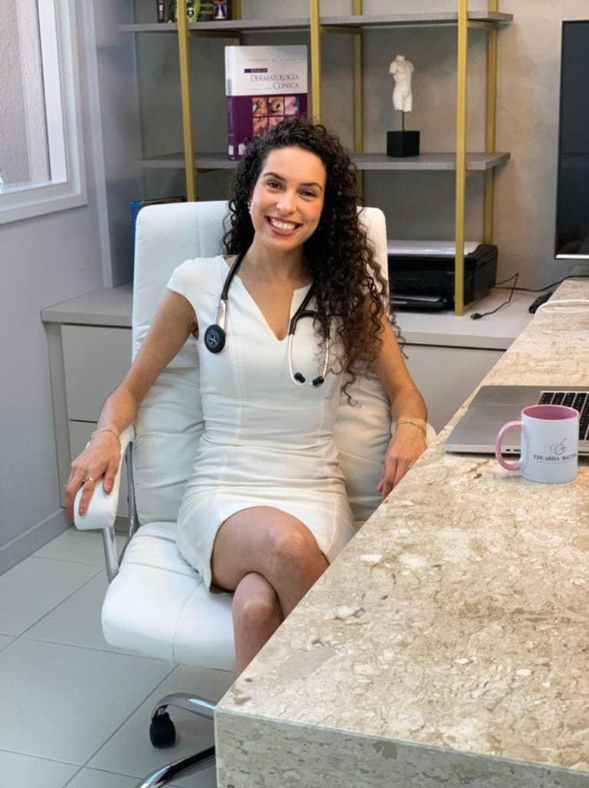
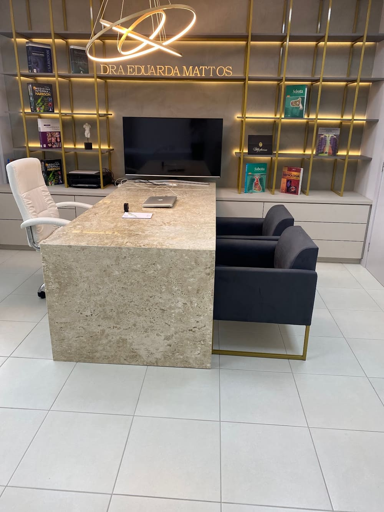
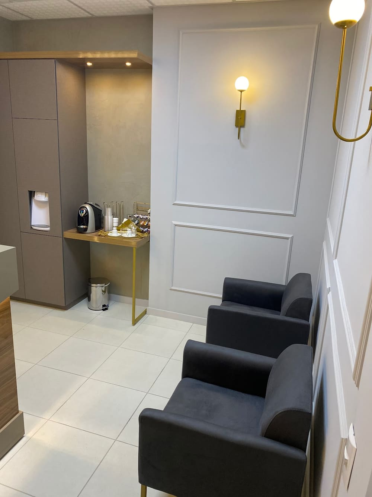
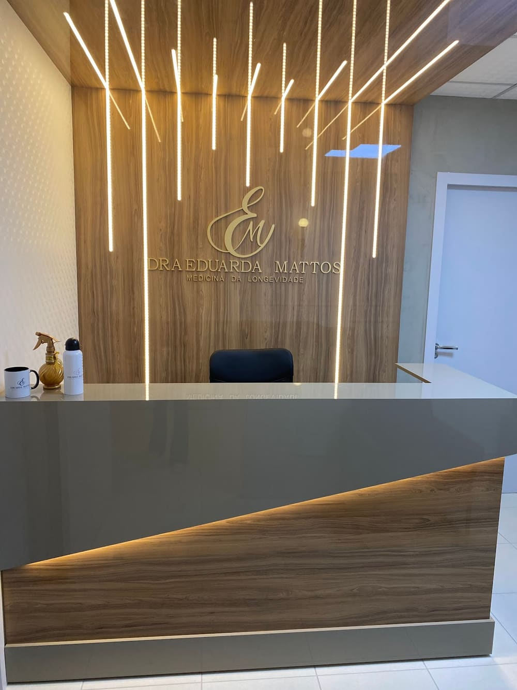

Dra. Eduarda Lencina Mattos
Cuidando da sua saúde de forma integral para uma longevidade saudável
Um olhar individualizado para sua saúde, com acompanhamento médico, prevenção e cuidado em cada fase da vida.
Atendimento mediante agendamento


Sobre
Um cuidado que olha para você por inteiro
Cuidar da saúde vai além de olhar para uma queixa isoladamente. É compreender o momento de vida de cada pessoa, seus hábitos, histórico e necessidades.
Na Dra. Eduarda Mattos Medicina, o atendimento é conduzido de forma individualizada, com uma abordagem que valoriza a escuta, a prevenção e o acompanhamento médico.
A proposta é construir, junto ao paciente, uma visão mais ampla sobre sua saúde, oferecendo orientações baseadas na avaliação clínica e nas particularidades de cada caso.
Porque cuidar da saúde hoje também é pensar na qualidade de vida dos próximos anos.
Conheça a Dra. EduardaAtendimento
Cuidado médico em diferentes momentos da sua vida
Cada fase da vida traz necessidades diferentes. O acompanhamento médico permite olhar para essas necessidades de maneira individualizada.
-
01
Avaliação clínica
Uma avaliação cuidadosa para compreender sintomas, histórico e necessidades atuais.
-
02
Prevenção e check-up
Acompanhamento de indicadores de saúde e identificação de fatores que merecem atenção.
-
03
Longevidade saudável
Um olhar voltado para hábitos, prevenção e cuidados que podem contribuir para uma vida mais saudável ao longo dos anos.
-
04
Acompanhamento médico
Consultas de acompanhamento para observar sua evolução e ajustar os cuidados conforme necessário.
-
05
Avaliação de exames
Interpretação dos resultados considerando o contexto clínico e o histórico de cada paciente.
-
06
Orientação em saúde
Um espaço para esclarecer dúvidas e compreender melhor os cuidados indicados para o seu caso.
Diferenciais
Medicina com tempo, atenção e individualidade
-
Escuta
Antes de qualquer orientação, existe uma conversa. Entender o paciente é parte fundamental do atendimento.
-
Visão integral
Histórico, hábitos, sintomas e contexto são considerados para construir uma visão mais ampla da saúde.
-
Comunicação clara
Informações médicas apresentadas de maneira acessível, para que você compreenda sua situação e seus próximos passos.
-
Cuidado contínuo
Quando necessário, o acompanhamento permite observar mudanças ao longo do tempo e adaptar os cuidados.
Como funciona
Do agendamento à consulta, de forma simples
-
01
Entre em contato
Fale conosco pelo WhatsApp e tire suas dúvidas sobre o atendimento.
-
02
Escolha seu horário
Nossa equipe informa as opções disponíveis e realiza o agendamento.
-
03
Tenha sua consulta
A médica conversa com você, entende suas queixas e realiza a avaliação necessária.
-
04
Entenda os próximos passos
Após a avaliação, você recebe as orientações adequadas para o seu caso.
Sua saúde merece um olhar individualizado.
Consulte os horários disponíveis e agende sua consulta pelo WhatsApp.
Agendar pelo WhatsAppFormação
Formação e trajetória
Dra. Eduarda Lencina Mattos
- Graduação
- [A inserir: curso de graduação e ano de conclusão]
- Universidade
- [A inserir: instituição de ensino]
- Residência
- [A inserir: residência médica, se houver]
- Especializações
- [A inserir: especializações, se houver]
- Pós-graduação
- [A inserir: pós-graduação, se houver]
- Cursos
- [A inserir: cursos complementares relevantes]
- Experiência profissional
- [A inserir: experiência profissional]
Depoimentos
A experiência de quem já passou pelo consultório
Tem colaborado demais em minha qualidade de vida na meia idade!!!
Consultório
Um espaço para receber você
Um ambiente tranquilo, confortável e reservado para que cada consulta aconteça com privacidade e atenção.



Contato
Dra. Eduarda Mattos Medicina
-
Rua da Praça, nº 241, Sala 718
Av. Pedra Branca
Palhoça — SC
88137-086 - (48) 99115-1718
Horários de atendimento
- Segunda-feira08:00 às 19:00
- Terça-feira08:00 às 19:00
- Quarta-feira08:00 às 19:00
- Quinta-feira08:00 às 19:00
- Sexta-feira08:00 às 19:00
- SábadoFechado
- DomingoFechado
O agendamento é realizado pelo WhatsApp. Clique no botão de contato e nossa equipe informará os horários disponíveis.
A Clínica Geral pode atender diferentes necessidades relacionadas à saúde. Entre em contato para entender se o atendimento é adequado para o que você procura.
Se você possui exames recentes ou documentos relacionados ao seu histórico de saúde, é interessante levá-los para que possam ser considerados durante a avaliação.
[INSERIR INFORMAÇÃO REAL]
O atendimento acontece na Rua da Praça, nº 241, Sala 718, Av. Pedra Branca, Palhoça — SC.
O atendimento acontece de segunda a sexta-feira, das 08:00 às 19:00.
Nossa equipe pode esclarecer dúvidas relacionadas ao atendimento, horários e agendamento. Questões clínicas devem ser avaliadas durante uma consulta médica.
Cuidar da sua saúde é um investimento em você.
Entre em contato pelo WhatsApp para consultar horários e informações sobre o atendimento.
Agendar minha consultaAtendimento mediante agendamento.